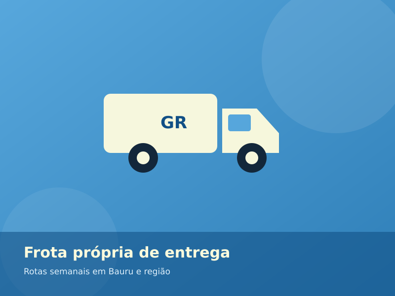
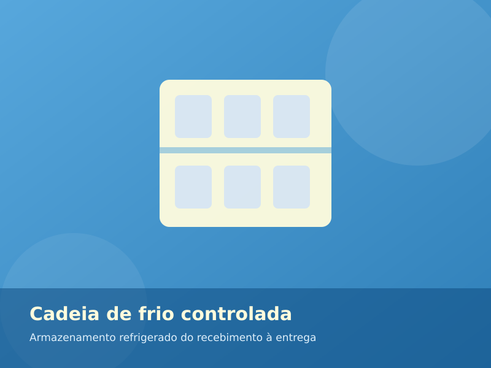
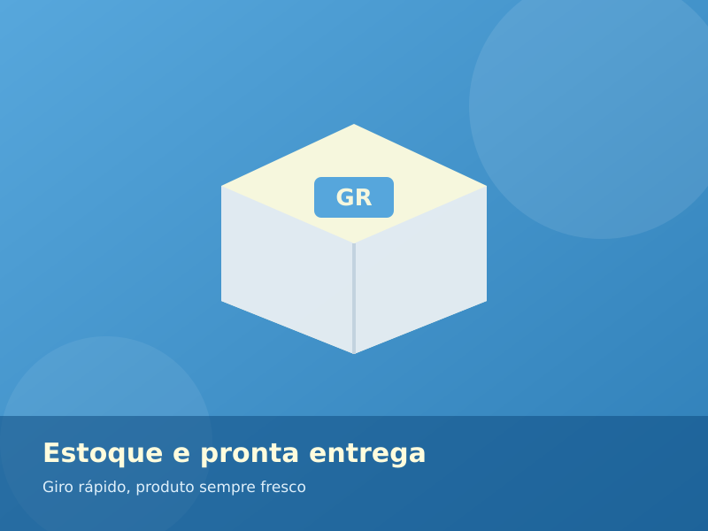
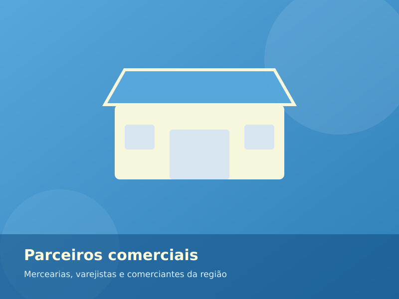

Início › Galeria
Galeria
Conheça um pouco da estrutura da GR Alimentos, desde o armazenamento refrigerado até a entrega dos produtos aos nossos parceiros comerciais.
Nossa estrutura
GR Alimentos em imagens
Veja alguns dos processos que fazem parte do nosso trabalho de distribuição em Bauru e região.




Quer conhecer melhor a GR Alimentos?
Entre em contato e saiba mais sobre nossos produtos, entregas e atendimento na região.